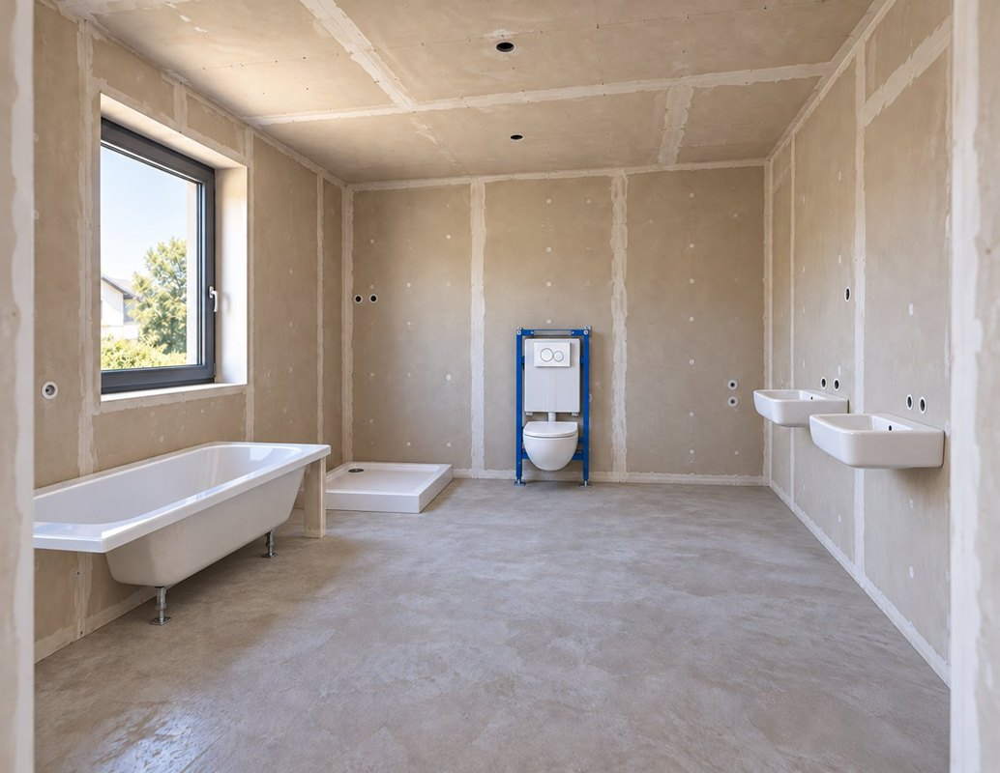
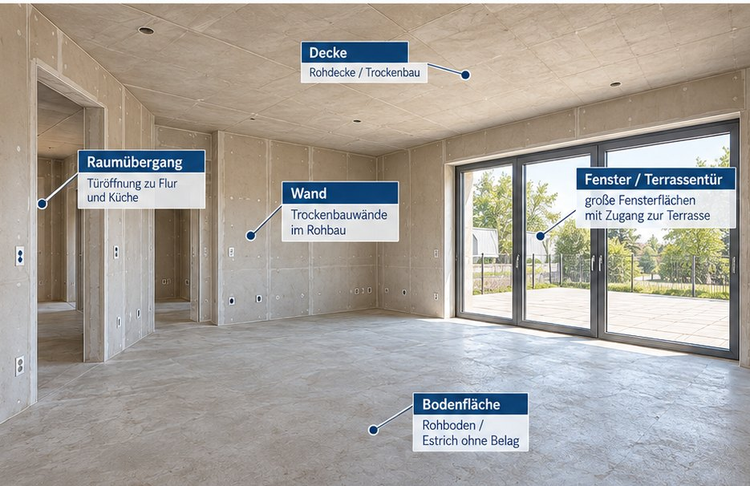

Erleben
Moderne Berufswelten und Technologien kennenlernen.
Berufsorientierung neu gedacht: digitale Anschauungsbeispiele, handwerkliche Aufgaben und eine klare Entwicklungsperspektive.
„KI trifft das Handwerk“ bringt junge Menschen mit modernen Berufswelten zusammen. Sie entdecken Interessen, Fähigkeiten und berufliche Perspektiven – bevor die Entscheidung für einen Ausbildungsweg gefallen ist.

Künstliche Intelligenz, Digitalisierung und neue Assistenzsysteme verändern Handwerk, Industrie und praktische Berufe.
Doch viele junge Menschen kennen diese Berufswelten noch mit Bildern von gestern.
KI trifft das Handwerk möchte moderne Arbeit verständlich und praktisch erlebbar machen.
Die Berufe bleiben.
Die Werkzeuge verändern sich.

KTDH ist das Konzept einer künftigen Bildungs- und Übergangsinfrastruktur für junge Menschen.
In einer modernen, digital geprägten Lern- und Erlebnisumgebung können Jugendliche Berufswelten kennenlernen, Zukunftstechnologien erleben und eigene Interessen und Fähigkeiten entdecken.
Technologie ist das Werkzeug, mit dem Berufe verständlicher, moderner und erlebbarer werden.
Der Einstieg kann zunächst über virtuelle Anschauungsmodelle erfolgen. Perspektivisch sollen Unternehmen, Handwerk, Kammern, Innungen und Bildungspartner Vertiefung und reale Begegnungen ermöglichen.
Moderne Berufswelten und Technologien kennenlernen.
Eigene Interessen, Fähigkeiten und Stärken erkennen.
Berufe und berufliche Möglichkeiten besser verstehen.
Bei Partnern vertiefende Einblicke und Erfahrungen sammeln.
Aus Interesse wird eine konkrete berufliche Perspektive.
Diese Abfolge beschreibt die langfristige Vision, keinen bereits umgesetzten oder überprüften Ausbildungsweg.
Mit einem digitalen Einfamilienhaus veranschaulicht KTDH, wie Jugendliche handwerkliche Tätigkeiten und technische Zusammenhänge schrittweise kennenlernen können. Die ersten Anwendungen konzentrieren sich auf das große Bad sowie den Wohn- und Essbereich. Sie dienen der Vorstellung des Ansatzes – nicht als bereits fachlich geprüfte Ausbildungsprogramme.

Welche Anschlüsse benötigen Waschbecken, Dusche, WC und Badewanne? In der interaktiven Darstellung können Rohrstücke ausgewählt und Kaltwasser-, Warmwasser- und Abwasserleitungen zugeordnet werden.
Stand: Ein virtuelles Aufgabenbeispiel ist ausgearbeitet. Die handwerkliche und pädagogische Validierung steht noch aus.

Wie wird ein geeigneter Bodenbelag ausgewählt und geplant? Das Beispiel veranschaulicht Materialien wie Parkett, Laminat und Feinsteinzeug sowie grundlegende Fragen zu Verlegerichtung, Materialbedarf und Hilfsmitteln.
Stand: Ein virtuelles Aufgabenbeispiel ist ausgearbeitet. Die spätere Ausgestaltung erfolgt gemeinsam mit Fachleuten.
Das digitale Einfamilienhaus ist ein konkreter Baustein des größeren KTDH-Konzepts. Seine Weiterentwicklung folgt einer abgestuften Logik.
Anschauliche digitale Räume und erste interaktive Aufgaben zeigen, wie ein Zugang zum Handwerk aussehen könnte.
Fachbetriebe sollen reale Arbeitsabläufe, Werkzeuge, Materialien, Zeitbedarfe und Qualitätsanforderungen einbringen und die Inhalte prüfen.
Auf fachlich geprüfter Grundlage können später altersgerechte digitale Aufgaben mit weiterführenden Lernmöglichkeiten entstehen.
Unser Grundsatz: Das Handwerk bestimmt die fachlichen Inhalte. KTDH entwickelt daraus verständliche digitale Lern- und Anschauungsangebote. Die interaktiven Beispiele sind zurzeit Konzeptdemonstrationen; eine schulische oder handwerkliche Eignung wird nicht vorweggenommen.
Die vier Erlebnisräume beschreiben eine mögliche spätere räumliche Umsetzung des KTDH-Gesamtkonzepts. Sie bestehen derzeit nicht als betriebsbereite Infrastruktur.

Wie verändern digitale Werkzeuge und KI unterschiedliche Berufe?

Was interessiert mich? Was fällt mir leicht? Wo liegen meine Stärken?

Wie arbeiten Menschen heute – und wie verändert Technologie ihre Aufgaben?
Welche nächsten Schritte, Partner und Ausbildungsangebote passen zu mir?
Finde heraus, was zu dir passt. Entdecke Berufe, Technologien und Arbeitswelten – ohne dich sofort entscheiden zu müssen.
Ausbildung und Zukunftstechnologie gehören zusammen. KTDH macht berufliche Perspektiven sichtbar.
Die Anschauungsbeispiele bieten Anknüpfungspunkte für Berufsorientierung und MINT-Themen. Eine schulische Eignung ist noch zu prüfen.

Praxiswissen mit digitalen Möglichkeiten verbinden – Handwerksbetriebe als fachliche Mitgestalter.
bringen reale Tätigkeiten, Arbeitsabläufe, Werkzeuge, Materialien und Praxiserfahrung in die fachliche Entwicklung ein.
verbinden Orientierung mit vorhandenen Strukturen.
übernehmen Vertiefung und praktische Erprobung.
bringen moderne Technologien in einen sinnvollen Bildungskontext.
stärken Bildungsinnovation und regionale Fachkräftesicherung.
Regional starten. Übertragbar denken.
Eine frühere Standortskizze sieht für das langfristige Konzept im Kreis Mettmann einen möglichen zentralen Erlebnisort von bis zu 500 m² Bruttogrundfläche vor. Standort, Finanzierung und Umsetzung sind noch nicht beschlossen.
Die regionale Vision bleibt bestehen. Im aktuellen Arbeitsschritt werden jedoch zunächst virtuelle Anschauungsbeispiele entwickelt und zur fachlichen Diskussion gestellt.

„KI trifft das Handwerk schafft keine Ausbildungswelt neben dem Handwerk. Es schafft einen neuen Zugang in das Handwerk.“
KTDH lädt zum fachlichen Austausch über mögliche nächste Entwicklungsschritte ein – insbesondere mit Handwerksbetrieben, Schulen und Partnern der beruflichen Bildung.
Weiterführende Informationen